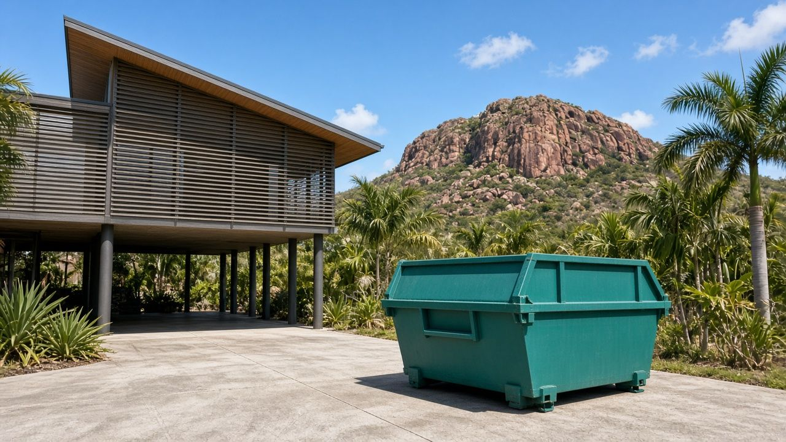
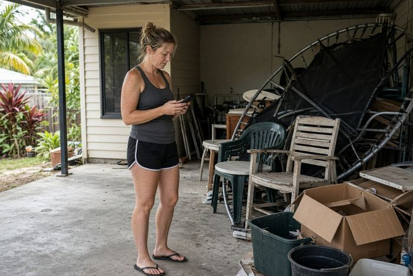
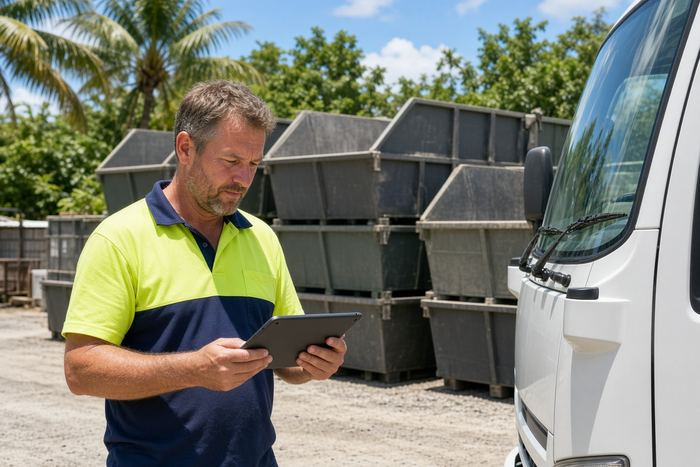
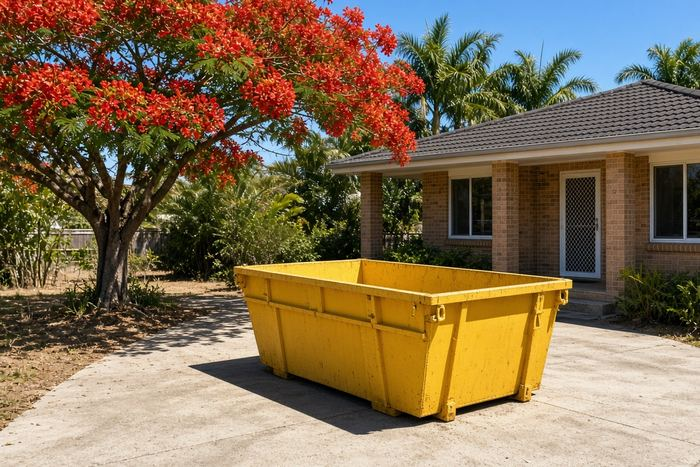
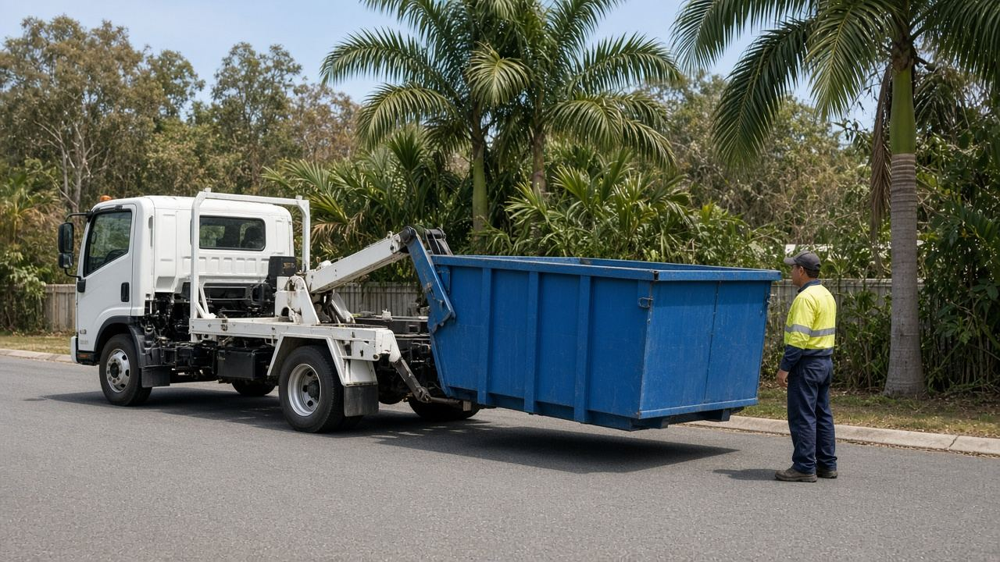
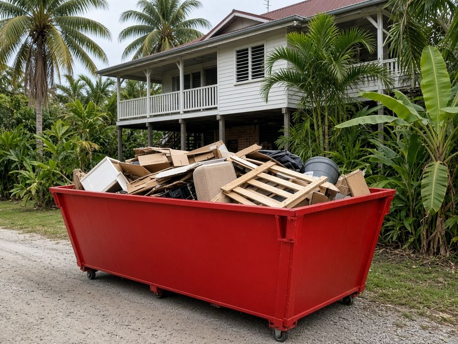
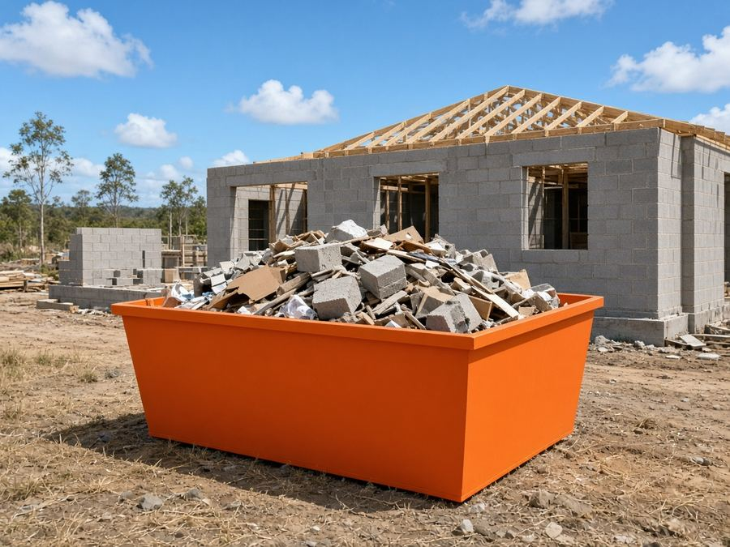
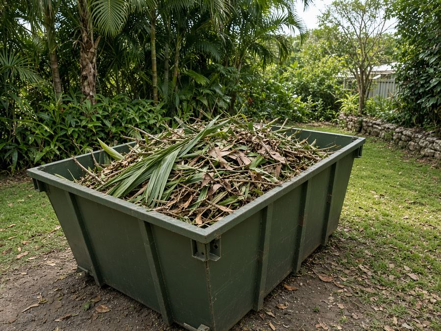
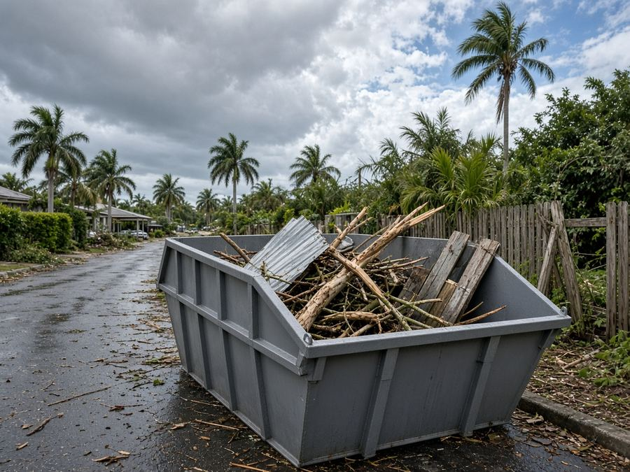
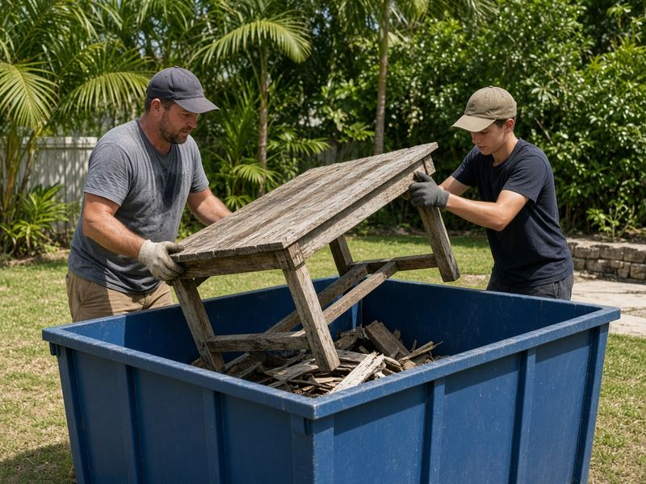

Skip Bins Townsville: Free Skip Bin Hire Quotes Across Townsville
In short: Townsville Skip Bins is a free quote service, not a skip hire company. Tell us your suburb and job, and we pass it to one local skip bin operator, who quotes you directly.
Cleaning up after the wet season in Kirwan, renovating a highset in Hermit Park or clearing out a rental in Douglas? Tell us your suburb, skip size and waste type, and we'll pass it to one local skip bin operator for a free, no-obligation quote.
Last updated: 24 October 2026
Get a free skip bin quote in Townsville
- Free quote for your exact job
- One local operator, not a call-centre auction
- Townsville, Kirwan, Douglas, Deeragun and surrounds
- No obligation to book
How it works

1Tell us about the clean-up
Choose your suburb, skip size and waste type in the quote form and add your details.

2We pass it to one local operator
Your enquiry goes to one operator who services your part of Townsville, not to a list of companies.

3They confirm price and delivery
The operator rings you, confirms price and drop-off, and you only book if it suits.
Townsville Skip Bins is a referral and quote service run by Raf Web Studio. We don't own trucks or bins and we don't take payments. The operator who quotes you supplies the skip and sets the price and hire terms.
Skip bin sizes for Townsville jobs
Townsville jobs range from storm and wet-season clean-ups to highset renovations and new builds in the northern beaches and Burdell. A 2–3 m³ skip handles a shed or under-house clean-out, 4–6 m³ a bathroom, kitchen or big yard job, and 8–12 m³ a whole house or building site. Skips are measured in cubic metres (m³). Wheelie bin comparisons assume a standard 240-litre bin (0.24 m³). Trailer loads assume a 6×4 box trailer loaded level with its sides, roughly 1 m³. Shapes and dimensions vary between operators, so we don't list exact measurements.


Illustrations are approximate and not to an exact scale.
Mini skip
≈ 8 wheelie bins · ≈ 2 trailer loads
An under-house or shed clean-out, or a small load of soil or broken concrete.
Small skip
≈ 13 wheelie bins · ≈ 3 trailer loads
A backyard clean-up or a room or two of old furniture.
Bathroom or laundry reno
≈ 17 wheelie bins · ≈ 4 trailer loads
A bathroom or laundry renovation, or old carpet and blinds from a rental.
Kitchen reno or big clean-up
≈ 25 wheelie bins · ≈ 6 trailer loads
A kitchen renovation or a big storm or yard clean-up.
House clear-out
≈ 33 wheelie bins · ≈ 8 trailer loads
Moving house, a Defence posting move or a deceased estate.
Large renovation
≈ 38 wheelie bins · ≈ 9 trailer loads
A large highset renovation or extension.
Builders and big jobs
≈ 50 wheelie bins · ≈ 12 trailer loads
New builds in Burdell, Mount Low or Bushland Beach, or a big clean-up. Needs good access.
Some operators offer skip bags or larger hook-lift bins for commercial jobs. Heavy waste (soil, concrete, besser blocks) usually needs a smaller bin because of weight limits.
What can and can't go in a skip
Waste type matters as much as size. Operators tip loads at licensed facilities such as council's Stuart Waste Facility, and each type of waste costs a different amount to dispose of.
Usually accepted
- General household waste: furniture, toys, clothes, boxes, cupboard contents and general junk.
- Green waste: palm and fern fronds, lawn clippings, branches and storm-damaged trees (often cheaper on its own, with no dirt or rubbish mixed in).
- Renovation waste: timber, plasterboard, old cabinets, carpet, tiles and fittings.
- Heavy or clean fill: soil, sand, concrete, bricks, rock and pavers (often needs its own bin and has a lower weight limit).
- Scrap metal: old roofing iron, carport sheets, fencing and outdoor furniture.
Not accepted, or extra charge
- Asbestos and fibro: never in a normal skip (see below).
- Tyres: usually banned or charged per tyre.
- Car and household batteries: a fire risk in a skip.
- Gas bottles and aerosols: can explode when compacted.
- Paint, oils, chemicals and liquids: including pool chemicals, sump oil, paint and garden sprays.
- Mattresses: often accepted for an extra fee.
- Food waste, medical waste and e-waste: check first. Many operators won't take TVs, computers or fluorescent tubes.
A note on asbestos
Many older Townsville homes, especially highsets and post-war houses, have fibro walls, eaves or sheds that may contain asbestos. In Queensland, the state's asbestos guidance says a homeowner can remove up to 10 m² of non-friable (bonded) asbestos without a licence. More than that needs a Queensland Health-approved homeowner's certificate or a licensed removalist, and friable asbestos must be removed by a Class A licensed removalist. See asbestos.qld.gov.au. If you suspect asbestos, say so on the quote form. Never hide it in a general skip.
Dropping things off yourself
Townsville City Council's Stuart Waste Facility at 24 Vantassel Street, Stuart, is its largest site, a landfill and transfer station open Monday to Sunday 6:30am to 5:45pm. All council waste facilities are closed on Good Friday and Christmas Day. Asbestos is accepted at Stuart only, between 7:30am and 3pm, sealed and double-wrapped in plastic at least 0.2 mm thick, up to 175 kg per load, and you must tell the gatehouse. The Hervey Range Resource Recovery Centre on Hervey Range Road takes small loads only and no asbestos. Check the Townsville City Council website for fees and accepted items.
Skip bin prices in Townsville
Skip bin prices depend on the bin size, what's going in it, how long you keep it and how far the truck travels, so we don't publish a price list. Tell us about your job and a local operator will quote for it. Get a free quote.
Prices vary by size, waste type and job. The operator quotes for your exact bin size, waste type and address.
What changes the price
Size and weight
Bigger bins cost more, though the cost per cubic metre usually drops. Heavy waste such as soil, concrete and bricks is limited by weight.
Waste type
Clean green waste and general household rubbish usually cost less to tip than mixed building waste, soil or concrete.
Distance and hire length
Deliveries out to the northern beaches or rural areas, extra hire days and difficult access can add to the price.
To keep costs down, sort heavy and green waste from general rubbish, book the smallest bin that fits and only hire for the days you need.
Putting a skip on the street: Townsville City Council rules
Last updated: 24 October 2026
On your own property
Your own driveway, yard or a firm patch of ground is the easiest place for a skip. Council's approval is for skips in the road reserve, such as the road or footpath, so a bin wholly on your property generally doesn't need it. In the wet season, lawns get soft, so a driveway or hardstand is safer for the truck.
On the road, footpath or nature strip
Townsville City Council requires an approval for works on public areas and roads for activities in the road reserve, which covers placing a skip on a footpath or road. Council's planning team handles work zones and other works in the road reserve. Council doesn't publish a single skip fee online, so ask what applies to your street.
Before you book a skip on the street, check with Townsville City Council on 13 48 10, or the planning team on 07 4773 8303 or planning.assets@townsville.qld.gov.au. Mention it on the quote form too, because the operator may be able to advise.
Wherever the skip goes, keep it clear of driveways, hydrants, bus stops and footpaths, and don't fill it above the rim.

Free skip bin quotes across Townsville
Get a free quoteSkip bin guides for Townsville
Plain-English guides to sizes, waste rules and Townsville City Council permits, plus pages for nearby suburbs.
Local area guides
Areas we cover around Townsville
We take quote requests from Townsville and nearby suburbs. The operator confirms delivery to your address.
Inner Townsville
- Townsville City
- North Ward
- South Townsville
- Railway Estate
- Hermit Park
- Mundingburra
- Aitkenvale
- Garbutt
- Wulguru
- Stuart
South-west
- Annandale
- Douglas
- Idalia
- Cranbrook
- Heatley
Thuringowa and north
- Kirwan
- Thuringowa Central
- Condon
- Rasmussen
- Kelso
- Deeragun
- Bushland Beach
- Burdell
- Mount Low
Not listed? Choose "Other" in the form and tell us your suburb.
Common skip bin jobs in Townsville
The jobs we see most across Townsville.

House and under-house clean-outsMoving, decluttering or clearing the space under a highset.
Renos and new buildsBuilders' waste from new estates, or a kitchen or bathroom renovation.
Yard and palm clean-upsPalm fronds, prunings and overgrown yards. Keep it green-only for a better rate.
Storm and cyclone clean-upsBranches, broken fencing and damaged carports after a storm. Keep green waste separate if you can.Defence and rental moves
Moving in or out of a rental, or a posting to or from Townsville. A 3–4 m³ skip clears most houses.
Deceased estates
Clearing a family home gently and in one go. A larger skip and a flexible hire period help.
Quick answers
What areas does Townsville Skip Bins cover, and is there a call-out fee?
We take skip bin quote requests from Townsville and nearby areas, including Townsville City, North Ward, South Townsville, Railway Estate, Hermit Park, Mundingburra, Aitkenvale, Garbutt, Wulguru, Stuart, Annandale, Douglas, Idalia, Cranbrook, Heatley, Kirwan, Thuringowa Central, Condon, Rasmussen, Kelso, Deeragun, Bushland Beach, Burdell, Mount Low. The quote service is free, so there's no call-out fee from us. The operator includes delivery and pick-up in its quote. Deliveries out to the northern beaches or rural areas, extra hire days and difficult access can add to the price.
Do I need a licence or permit for a skip bin?
You don't need a licence to hire a skip. A skip wholly on your own property generally doesn't need approval. In the road reserve, such as the road or footpath, yes: Townsville City Council requires an approval for works on public areas and roads. Asbestos is different: asbestos can't go in a general skip. In Queensland, more than 10 m² of bonded asbestos needs a licensed removalist or a Queensland Health-approved homeowner's certificate, and friable asbestos needs a Class A licensed removalist.
What affects the price of a skip bin?
Skip bin prices depend on the bin size, the type and weight of the waste, how long you keep the bin, how far the truck travels and how easy access is. We don't publish a price list. Tell us about your job and a local operator will quote for it.
Who supplies the skip?
Townsville Skip Bins is a free referral and quote service run by Raf Web Studio. We don't own skips or trucks. We pass your request to one local skip bin operator who services your area, and they quote, supply the skip and set the hire terms.
Skip bin FAQ for Townsville
How much does a skip bin cost in Townsville?
It depends on the size, waste type, hire period and distance. Tell us about your job and a local operator will quote for it.
Do I need council approval for a skip on the street in Townsville?
Generally yes. Townsville City Council requires an approval for works on public areas and roads, which covers a skip in the road reserve. A skip wholly on your own land generally doesn't need it.
How do I apply?
Call Townsville City Council on 13 48 10, or the planning team on 07 4773 8303, to check what's needed for your street.
Do you cover Kirwan, Douglas and the northern beaches?
Yes, we take requests from across Townsville, including Kirwan, Douglas, Deeragun, Bushland Beach and Kelso. The operator confirms delivery.
Where is the Townsville tip?
Council's largest facility is the Stuart Waste Facility at 24 Vantassel Street, Stuart, open Monday to Sunday 6:30am to 5:45pm. There's also the Hervey Range Resource Recovery Centre for small loads.
Can I take asbestos to the Townsville tip?
Only to the Stuart Waste Facility, between 7:30am and 3pm, sealed and double-wrapped in plastic at least 0.2 mm thick, up to 175 kg per load. Tell the gatehouse when you arrive.
What size skip do I need?
2–3 m³ for a shed or under-house clean-out, 4 m³ for a bathroom, 6 m³ for a kitchen or storm clean-up, and 8–12 m³ for a house clear-out or new build.
Can I put asbestos or fibro in a skip?
No. Asbestos can't go in a general skip. In Queensland, more than 10 m² of bonded asbestos needs a licensed removalist or a Queensland Health-approved homeowner's certificate, and friable asbestos needs a Class A licensed removalist.
Can I put soil, rocks or concrete in a skip?
Usually, but heavy waste has weight limits and often needs its own, smaller bin. Choose "Soil, concrete or bricks" in the form.
What can't go in a skip?
Asbestos, tyres, batteries, gas bottles, chemicals, paint, oils and liquids. Mattresses and e-waste are often extra or not accepted. The operator who quotes you will confirm their list.
How long can I keep the skip?
Commonly a few days to a week, with extra days by arrangement with the operator.
Is Townsville Skip Bins a skip hire company?
No. It's a free referral and quote service run by Raf Web Studio. One local operator quotes you and supplies the skip.

Ready to get rid of it?
Tell us your suburb, skip size and waste type and we'll pass it to one local Townsville operator for a free quote.